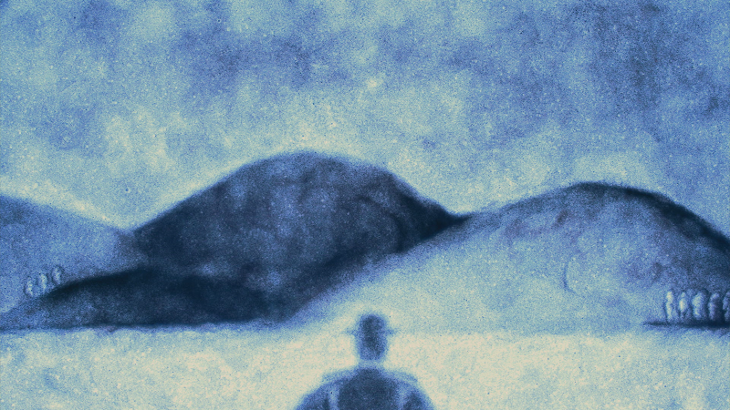
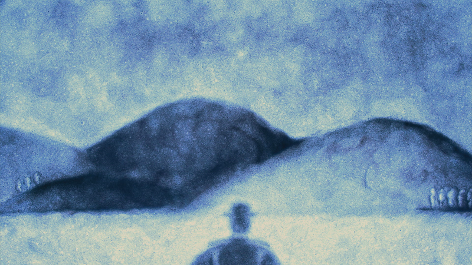

My grad film at the Royal College of Art,2019
Animation&Sound by Yujie Xu
Music by Catherine McAteer
Sound Mix by Ross Wilkes Houghton
Duration: 07'00''
Medium: Sand on glass
Year: 2019
Screenings & Awards:
Best Student Film / Gaston Roch Award, CINANIMA 2020
Tricky Women/Tricky Realities Festival, 2020
Seoul International Cartoon & Animation Festival (SICAF), 2020
FIRST Film Festival, 2020
Alexandre Trauner ART/Film Festival, 2020
Animaphix International Animated Film Festival, 2020
Ottawa International Animation Festival, 2020
San Diego Underground Film Festival, 2020
Animest International Film Festival, 2020
FEINAKI Beijing Animation Week, 2020
NOWNESS China New Talent Awards, 2020
Animateka International Film Festival, 2020
KROK International Animation Film Festival, 2020
Slamdance Film Festival, 2021


 
